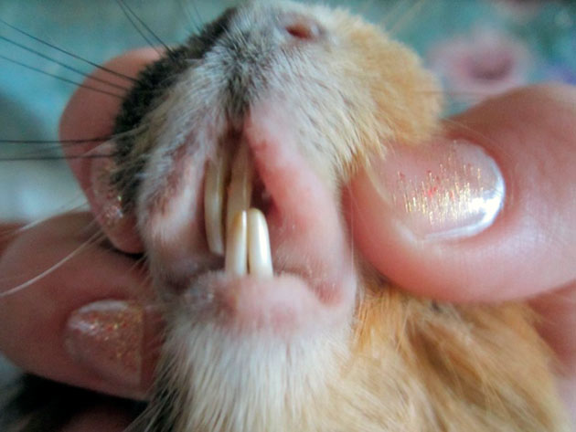
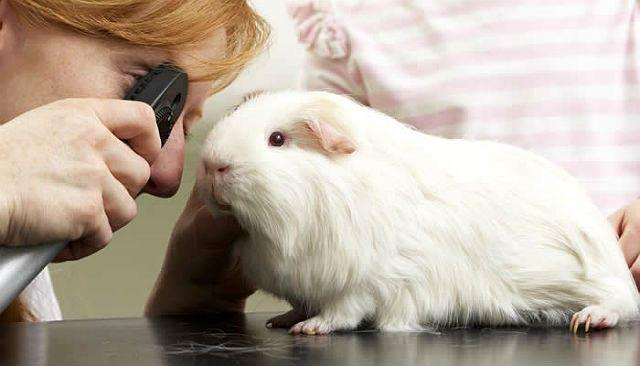
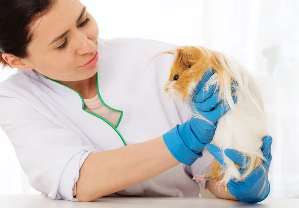

Хоча мурчаки досить несприйнятливі до будь-якої інфекції, і хвороби їх наздоганяють рідко, але все одно потрібно уважно стежити за здоров’ям улюбленця і звертатись до ветеринара. Доречі, далеко не всі лікарі-ветеринари займаються лікуванням морських свинок. Для них є свій лікар, якого називають ратологом.
При погіршенні здоров’я свинки спостерігаються такі симптоми: апатичність, поганий апетит, виділення з очей, підвищена температура, скуйовджена шерсть. У скінні (безшерста порода) у цей період помітно змінюється стан шкіри. Хворі звірята ховаються в кутку клітки, прикривають очі, не звертають уваги на зовнішні подразники. При кишкових розладах і отруєннях екскременти набувають рідкої консистенції. При появі будь-якого з цих симптомів вихованця потрібно показати ветеринару.
Діарея є хворобою травної системи, найбільш відома і найбільш поширена у морських свинок. Вона може швидко довести улюбленця до смерті, викликаючи зневоднення та інші проблеми, тому треба вчасно вжити заходів. Діарея виникає через серйозні кишкові проблеми та може бути наслідком зміни або дисбалансу харчування - бактерії і токсини у їжі та сіні. Консультація ветеринара є обов’язковою у разі діареї. Визначивши, через що вона виникла, лікар назначить правильне лікування.
Кокцидіоз є найбільш поширеним у кроликів, однак цей одноклітинний паразит може потрапити до організму морської свинки через кокцидії, коли тваринка їсть їжу, яка контактувала з каловими речовинами. Він розвивається в кишечнику.
Симптоми: У вашої морської свинки діарея з кров’ю та слизом, шерсть втрачає блиск і гладкий зовнішній вигляд, свинка втрачає вагу.
Оскільки ця хвороба викликає діарею, мурчак може швидко загинути від зневоднення. Ви повинні терміново відвести тваринку до вашого ветеринара, який повинен помістити її в карантин, подбати про її регідратацію, а потім про лікування. Лікування ефективне лише в випадку, якщо хвороба проявилась рано. Існує печінкова форма цього захворювання, яку важко визначити і важко вилікувати.
Ентеротоксемія є смертельною для мурчаків. Бактерії під назвою клостридії, які є постійними мешканцями травного каналу у здорових дорослих тварин, починають аномально швидко рости, через дисбаланс у кишковій флорі вашої морської свинки, який може виникнути після терапії антибіотиками. Бактерії виділяють токсин, який атакує слизову оболонку травлення і колонізують все тіло, можуть спричинити сепсис. Ви повинні негайно звернутися до ветеринара, який проведе аналіз крові і калу, щоб дати назву бактеріям. Ентеротоксемія може призвести до летального результату, якщо не встигнути вчасно.

Хвороби зубів
Морські свинки часто страждають від проблем із зубами. Це пов’язано з особливостями раціону. Комерційний корм, яким годують велику частину вихованців, відрізняється низьким вмістом грубих волокон і великої кількості крохмалю. Дефіцит мінералів і вітамінів в раціоні мурчаків теж не рідкість. Все це може викликати захворювання зубів.
Симптоми, які можуть виникнути у морської свинки, яка страждає від проблем із зубами:
Слинотеча, мокра мордочка – коли свинці важко ковтати чи жувати, слини виділяється більше, ніж потрібно;
Втрата ваги – через незручність чи біль свинка може почати їсти менше або перестати їсти зовсім;
Зміна смакових звичок та переваг;
Затруджене вживання їжі – наприклад, можна побачити, як шматочки погано пережованої їжі випадають з рота;
Неправильний прикус – ви самі можете оцінити тільки різці, два верхніх повинні бути рівномірно сточені і трохи нависати над двома нижніми різцями, ці зубки ви можете побачити, тільки піднявши губи морської свинки, вони не повинні стирчати і бути помітними зовні, не повинні бути сточеними навскоси, різці у морських свинок повинні мати білий колір;
Кровотеча з порожнини рота – коронки внутрішніх защічних зубів, що розрослися, можуть травмувати щоки та/або язик, тому іноді можна помітити кров’янисті виділення на мордочці;
Розрив, перфорації щоки – відбуваються при дуже сильних подовженнях коронок корінних зубів;
Нижньощелепні абсцеси – ви можете помітити округлі ущільнення на нижній щелепі, спостерігається асиметрія мордочки;
Верхньощелепні абсцеси – виявляються, як правило, гнійними виділеннями з очей або випиранням, збільшенням очного яблука;
Виділення з носа – синусні інфекції, є також ознаками формування верхньощелепних абсцесів;
Сльозотеча – внаслідок подовження «коренів» корінних зубів та інших патологіях, що викликають обструкцію слізних проток;
Проблеми з кишечником – відсутність нормального харчування може спричинити серйозні проблеми з роботою травного тракту морських свинок.
Причини проблем із зубами у морських свинок:
Травма зубів – різці морська свинка може травмувати об металеві грати клітини або невдало впавши з дивана, або з рук власників. Тварину обов’язково слід показати ратологу. Згорнутий на бік або укорочений зуб може спричинити розвиток абсцесу, чи спровокувати подальше неправильне зростання зубів та зміни прикусу;
Спадковість – генетичні причини неправильного прикусу повинні викорінюватися шляхом вилучення з розведення всіх гризунів з неправильним прикусом;
Нестача грубих кормів у раціоні – сіно вимагає постійної роботи щелепами та оптимальне сточування оклюзійних поверхонь зубів;
Надлишок комбікорму та інших м’яких та легкозасвоюваних кормів у раціоні – швидке насичення тварини призводить до надмірного розростання коронок зубів;
Сіно, оброблене гербіцидами та містить надлишок фтору – може викликати надмірне розростання коренів зубів.
Виявивши будь-які зміни у поведінці, харчуванні та/або зовнішності своєї морської свинки, якнайшвидше зверніться до ратолога. Огляд тварини загалом, ротової порожнини і рентген, за потреби, дозволять лікарю встановити діагноз, спланувати лікування.

Захворювання очей
Механічні ушкодження можуть призвести до запалення очей і кон’юнктивіту.
Звичайні симптоми захворювання – це підвищена сльозоточивість, хвороблива реакція на світло, виділення з очей. Створюється видимість, що хворе око закриває пелена. Лікування потрібно починати на першій, катаральній стадії хвороби. В іншому випадку, патологія переросте в гнійний кон’юнктивіт, при якому запальний процес перекинеться на ділянки шкіри біля очей. Якщо і на цій стадії не забезпечити необхідне лікування, тварині загрожує втрата зору.
Щоб позбутися кон’юнктивіту в початковій стадії, необхідно промити хворе око розчином борної кислоти (2%) або слабким чаєм. Більш серйозні випадки потребують консультації ветеринара. Якщо своєчасно не почати лікування, через 2-3 дні почнеться помутніння рогівки.
Ще одна хвороба очей, від якої часто страждають вихованці – це кератит. Його викликає механічне пошкодження очей соломинкою або травинкою. Якщо не звернутися у ветеринарну лікарню, рогова оболонка швидко помутніє.

Авітаміноз
Незважаючи на те, що до складу готових кормів для морських свинок входить великий асортимент поживних речовин, у 30% тварин час від часу спостерігаються симптоми нестачі вітамінів і мікроелементів. Ознаками авітамінозів може бути випадання шерсті, шкірні алергії, захворювання очей, зниження імунітету. Ослаблені морські свинки хворіють набагато частіше, швидше заражаються інфекційними хворобами.
Особливо це стосується скінні, які гостріше інших порід реагують на протяги і зниження температури. При ознаках авітамінозу необхідно показати мурчака ветеринару, щоб він призначив необхідий полівітамінний засіб. Лікар порадить, що робити в цьому випадку, як змінити раціон харчування, включивши в меню свинки більше вітамінних продуктів. Це можуть бути як свіжі корми, так і готові суміші.
У зимовий час молоді особини страждають від нестачі сонця, вітаміну D, кальцію, калію і фосфору в кормах. Брак важливих для організму речовин може спровокувати розвиток рахіту.
Симптоми хвороби – це уповільнений ріст, провисша спина, викривлені кінцівки і зуби, потовщені суглоби. Звірятка можуть гризти вапно на стінах, свою брудну підстилку.
Для попередження хвороби рекомендується в зимовий час кожен день опромінювати дитинчат кварцовою лампою, самостійно робити кормові суміші з добавкою кісткового борошна. Якщо свинка все-таки захворіла, її показують ветеринару. Зазвичай призначається лікування у вигляді прийому крапель тривітаміна. До кормів можна додати концентрат вітамінів D і A, а також риб’ячий жир. Клітка з твариною переноситься в світле і сухе приміщення.
Вірусні хвороби
Захворювання, викликані вірусами, власник морської свинки не завжди може розпізнати самостійно. У більшості випадків для порятунку вихованців необхідне втручання фахівця.
Найбільш грізні вірусні захворювання – це «параліч морських свинок» і «мор морських свинок». У цих хвороб практично ідентичні симптоми: параліч задніх кінцівок і судоми. Окрім цих, є ще не такі відомі вірусні захворювання морських свинок, але все одно дуже небезпечні.
Про вірусної хвороби говорять такі симптоми, як виділення з носа, злипша і розпатлана шерсть, виділення з очей, кашель, рідкий кал, зміни в поведінці. Такі хвороби є заразними і можуть знищити весь виводок за короткий час. Однією з поширених вірусних хвороб всіх морських свинок, є псевдотуберкульоз, який починається з проносу і закінчується повним виснаженням і паралічем.
Симптоми вірусних патологій:
гнійні виділення з очей;
нежить;
судоми;
блювота;
параліч;
важке дихання;
висипання на шкірі;
втрата ваги;
нетипова поведінка;
Морським свинкам небезпечний навіть нежить. Хвороба може перейти в запалення легеней, яке в 50% закінчується смертю тварини. При появі одного з перерахованих симптомів тварину потрібно терміново відселити від інших і звернутися до ветеринара, який призначить необхідне лікування.
Захворювання органів дихання
Морські свинки схильні до захворювань дихальних шляхів. Вони часто страждають від протягів і переохолоджень, викликаних тривалим перебуванням на холодній підлозі. Як вже говорилося, якщо свинка захворіла, нежить, може перейти в запалення легенів і бронхіт. Хвороба викликається не тільки інфекцією, але і дефіцитом вітаміну C.
Захворювання шкіри
Морські свинки часто страждають від проблем з шкірними покривами, що виникли внаслідок механічних пошкоджень, ураження шкіри ектопаразитами, порушеннями в обміні речовин і інфекційними хворобами.
Власники повинні звертати увагу на такі симптоми:
свербіж;
почервоніння шкіри;
струпи;
ущільнення;
Алопеція, або облисіння, може охоплювати як невеликі ділянки шкіри, так і значні області. Наявність захворювання, як правило, говорить про неправильне утримання мурчака. Ще одна можлива причина хвороби – це поїдання вихованцем власної шерсті. Таке відхилення в поведінці викликане неправильно підібраним раціоном. Лікування в цьому випадку полягає в корекції програми харчування.
Нерідко звірята страждають від корости, збудником якої є коростяний кліщ. Майте на увазі, якщо ваша свинка захворіла, значить, вона нещодавно контактувала з зараженою твариною. Кліщі, які оселилися в шкірних покривах, викликають неприємний свербіж.
У тварини можна помітити наступні симптоми хвороби:
подряпини на шкірі;
втрата апетиту;
лисини;
струпи і потовщення шкіри.
Так як кліщі можуть заразити людину, хворого мурчака необхідно якнайшвидше відвезти у ветеринарну клінику. Зазвичай, призначається лікування у вигляді купання вихованця в полупроцентном розчині бромоціклена. Запущена форма захворювання може закінчитися смертю вихованця.
Новоутворення
Новоутворення зазвичай з’являється у тварини ближче до старості. Свинки, переносять операції важче, ніж інші домашні улюбленці, тому ставтеся до них більш уважно. Щодня промацуйте вихованця, щоб не пропустити момент, коли пухлина почне формуватися.
У морських свинок зустрічаються такі форми утворень, як рак молочної залози і шкіри. Причому пухлина залози буває як у самок, так і самців. У 70% випадків йдеться про доброякісну фіброзну аденомію, цілком операбельну і яка не переходить на інші органи. Решта 30% – це злоякісна аденокарцинома. Лікування в цьому випадку може допомогти тільки на ранній стадії.
Базальноклітинна пухлина (рак шкіри) з’являється на задніх лапках свинки і довго росте.
Дуже важливо вчасно звернутися до фахівця, поки хвороба перебуває на початковій стадії. Надалі з пухлини почне виділятися гній, небезпечний для інших вихованців.